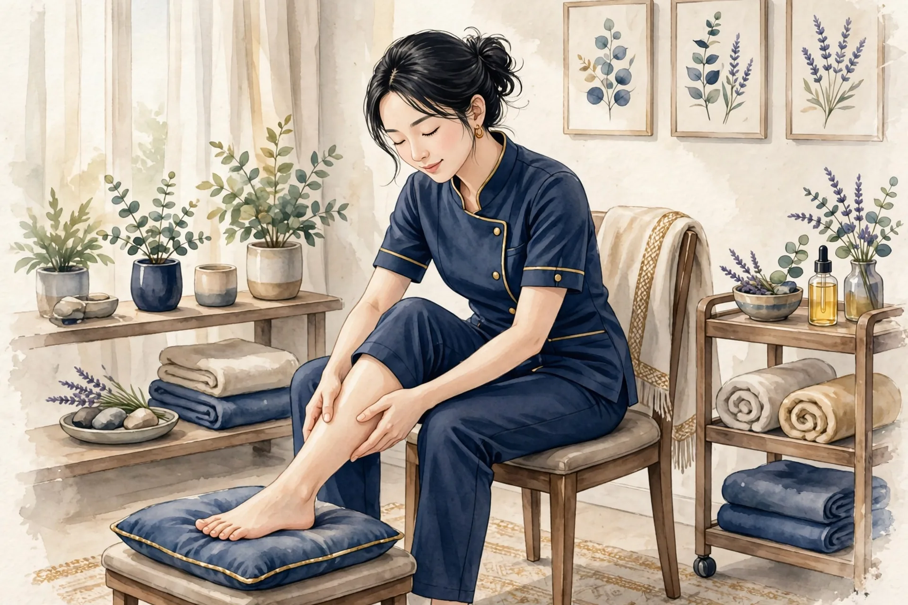
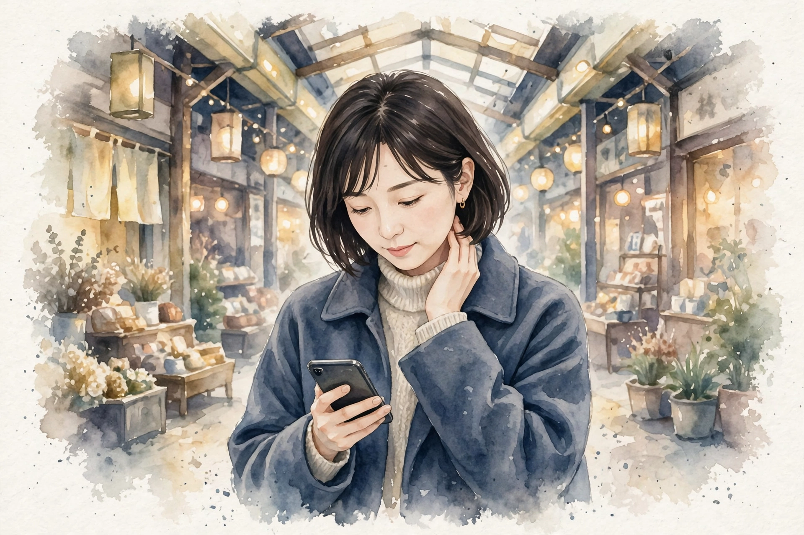
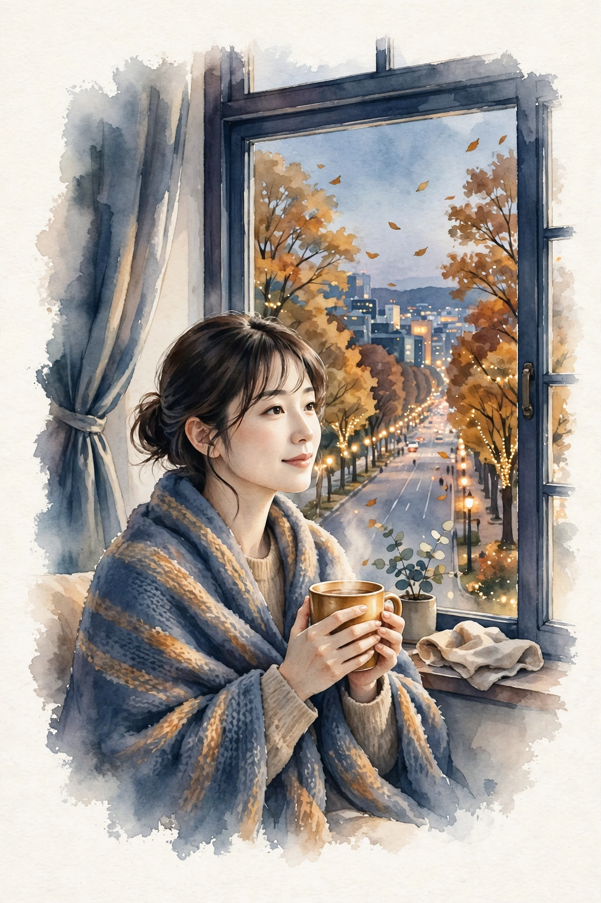
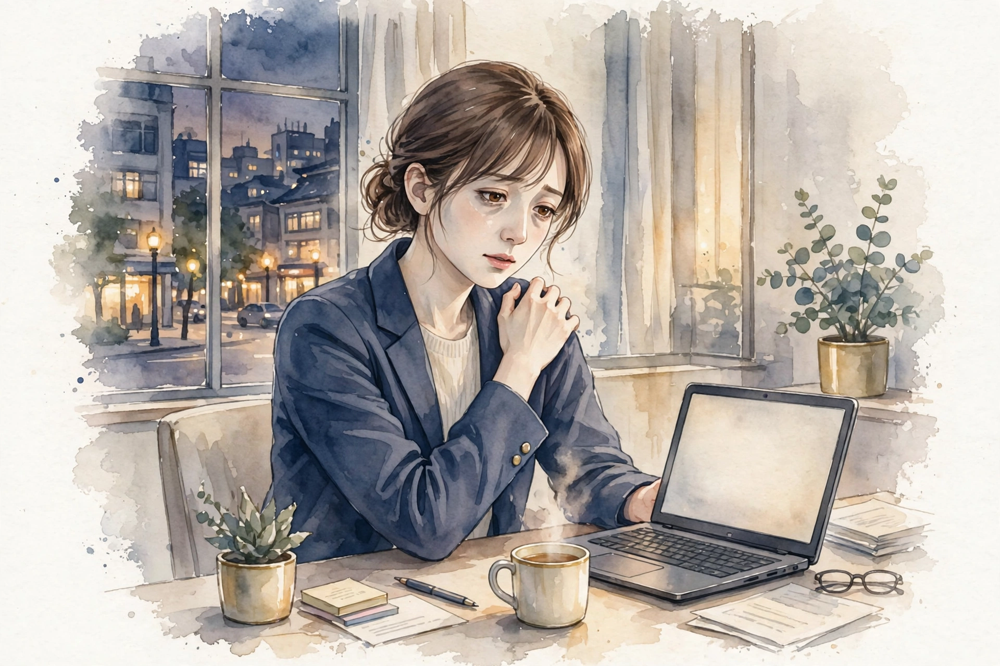
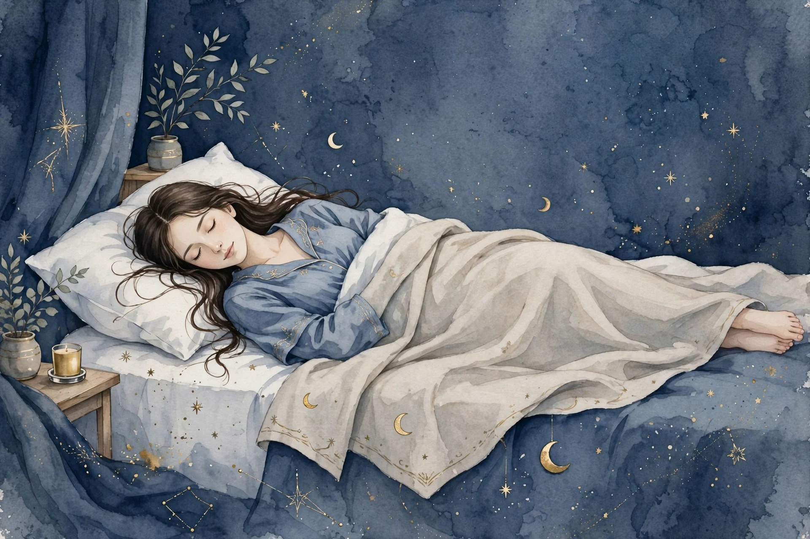

ブログ・コラム
お悩み別の解説ページと、季節に合わせたセルフケアのコラムをお届けします。開院に向けて、少しずつ記事を増やしていきます。
-
 コラム ／ 顔のむくみ感・やませの日
コラム ／ 顔のむくみ感・やませの日国分町でやませの日に気になる顔のむくみ感｜冷えと過ごし方の見直し
国分町でやませの日に顔のむくみ感が気になるときの要因の整理と、朝にできるセルフケア、冷えと過ごし方の見直し方をご紹介します。
-
 コラム ／ 巻き肩・冬の寒さ
コラム ／ 巻き肩・冬の寒さ国分町で冬の寒さが続く日に気になる巻き肩｜肩がすくむ姿勢の見直しとセルフケア
国分町で冬の寒さが続く日に肩がすくみ、巻き肩が気になるときの背景の整理と、姿勢を見直すポイント、帰宅後にできるセルフケアをご紹介します。
-

コラム ／ 足の疲れ・立ち仕事国分町で立ちっぱなしの日に気になる足の疲れ｜接客・立ち仕事のあとのセルフケア
国分町で立ちっぱなしの日に足の疲れが気になるときの要因整理と、接客・立ち仕事のあとのセルフケアをご紹介します。
-
 コラム ／ 全身の疲労感・冬
コラム ／ 全身の疲労感・冬国分町で冬の疲れが気になるときの全身の疲労感｜年末の忙しい時期の過ごし方
冬の疲れや年末の忙しさが重なり、全身の疲労感が気になるときの要因整理と、年末の時期に取り入れやすい過ごし方をご紹介します。
-
コラム ／ 自律神経の乱れ感・ストレス
国分町で寒暖差の大きい日に気になる心身の重だるさ｜自律神経の乱れ感との付き合い方
寒暖差の大きい日に感じる心身の重だるさの要因整理と、服装・温め方・呼吸・眠りのセルフケア、受診の目安をご紹介します。
-

-

コラム ／ 季節のセルフケア杜の都に冬の足音 ── 冷えと肩の張りが気になる季節の過ごし方
ケヤキ並木に冬の気配が近づく杜の都・仙台。冷え込みとともに気になる肩の張りや手足の冷たさに、温める工夫と小さなセルフケアをご紹介します。
-

お悩み別 ／ 肩こり国分町で気になる肩こり ── 要因の整理とセルフケア
国分町・一番町エリアで働く方に多い肩の張りを、要因ごとに整理しました。毎日のセルフケアと、受診を考える目安もまとめています。
-
お悩み別 ／ 首こり
一番町で気になる首こり ── 要因の整理とセルフケア
一番町で買い物や仕事のあとに気になる首の重さを、姿勢の観点から整理しました。画面との付き合い方や、首まわりのセルフケアをご紹介します。
-

-
 お悩み別 ／ 腰の重さ・腰痛
お悩み別 ／ 腰の重さ・腰痛一番町で気になる腰の重さ・腰痛 ── 要因の整理とセルフケア
座り仕事と東北の冬のある仙台で重くなりやすい腰の要因を整理しました。毎日のセルフケアと受診の目安もまとめています。
-
お悩み別 ／ 眼精疲労・目の疲れ
国分町で気になる眼精疲労・目の疲れ ── 要因の整理とセルフケア
事務仕事の多い仙台で目の疲れを感じやすくなる要因を整理しました。職場と自宅でできるセルフケアと受診の目安もまとめています。
-
 お悩み別 ／ 頭痛・頭の重さ
お悩み別 ／ 頭痛・頭の重さ国分町で気になる頭痛・頭の重さ ── 要因の整理とセルフケア
やませの日や冬の冷えで頭が重くなりやすい方へ、冷えや姿勢など要因の整理と、こめかみほぐしなどのセルフケア、受診の目安をまとめました。
-
お悩み別 ／ 体のだるさ
一番町で気になる体のだるさ ── 要因の整理とセルフケア
仙台で冷えと座り仕事が重なり体のだるさを感じやすい方へ、要因の整理と湯船・温めなどのセルフケア、受診の目安をまとめました。
-
お悩み別 ／ 姿勢・猫背
国分町で気になる姿勢・猫背 ── 要因の整理とセルフケア
雪道と職場の姿勢で背中が丸くなりやすい仙台の方へ、重心線の考え方に基づく猫背の仕組みの整理と、胸を開くストレッチなどのセルフケア、受診の目安をまとめました。
-

お悩み別 ／ 寝つき・眠りの浅さ一番町で気になる寝つき・眠りの浅さ ── 要因の整理とセルフケア
寝つきの悪さや眠りの浅さが気になる方へ、体内時計と深部体温の仕組みの整理と、安眠・神門などのツボ押しや足元の工夫といったセルフケア、受診の目安をまとめました。
開院のお知らせや新しい記事は、このページとサイトのトップでご案内します。